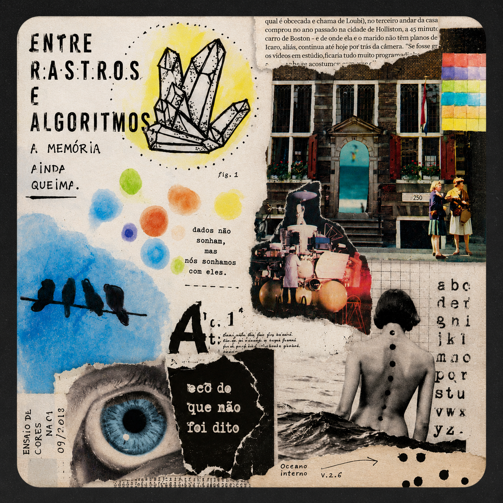
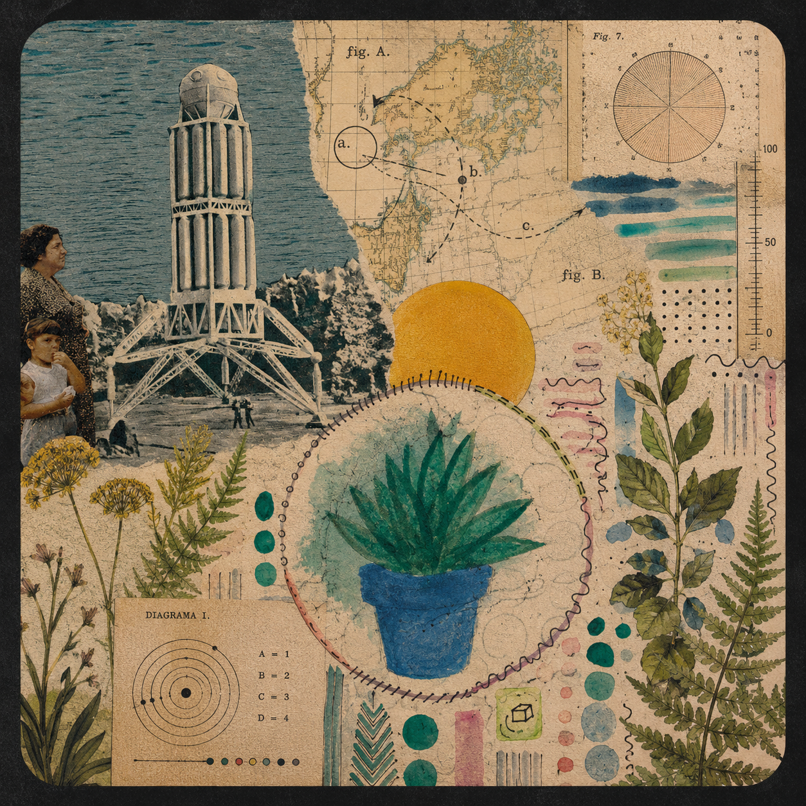

Tipo Sensível
Pesquisa em comportamento tipográfico e sistemas generativos, estruturada em uma taxonomia própria: Partícula, Campo, Forma.
Ver experimento →
Judgment Console
Não é sobre avaliar imagem — é sobre um problema mais amplo: hoje gerar deixou de ser o gargalo, julgar é. Uma investigação sobre quais critérios tornam uma ideia original em vez de "aislop".
Ver experimento →
Traço de Vento
Rastros de tinta que seguem o movimento do mouse com atraso e ruído — cada traço carrega sua própria inércia, criando uma caligrafia que ninguém desenhou de propósito.
Ver experimento →
Mapa de Ventos e Cataclismos
Campo de partículas guiado por ruído de Perlin, reagindo ao brilho captado pela webcam em tempo real — um estudo iniciado a partir de visão computacional que virou paisagem própria. Pede acesso à câmera.
Ver experimento →
Visão Computacional — Detecção de Bordas
Continuação do estudo de visão computacional: detecção de bordas em tempo real via webcam (Canny), com leitura de densidade de borda e energia de movimento quadro a quadro. Pede acesso à câmera.
Ver experimento →
Gerador de Padrões Geométricos
Gerador interativo de padrões geométricos em p5.js, pensado para produção de peças para redes sociais.
Ver experimento →
Design Playbook
Sistema autoral de documentação e operação criativa — o desafio deixa de ser gerar e passa a ser julgar, decidir e manter consistência em escala.
Ver experimento →
Jardim Onírico
Jardim generativo em camadas persistentes — cada sessão de uso acumula como uma camada visual permanente, uma "estratigrafia" de interação.
Em desenvolvimento